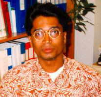

The Swedish Trap

November 1990. My days in Jawaharlal Nehru University were coming to an end. I had already finished the writing of my Ph.D. thesis. I was happy to create a university record of some sort by finishing the thesis in the shortest possible time. But, the future uncertainties were too much even to relax, forget the celebration. Academic profession in India was never of my interest- I was thinking of completing my LLB degree in Delhi University and then to join a law farm or to join my family profession, i.e., politics. Not finding any proper answer to any of my plans, I was busy in killing time by reading through all the news papers in JNU library. In one of those cold November days, before taking my lunch, I found a letter from my present Department at Uppsala, Sweden, which had brought the news of my admission there to take a semester-long specialisation course on International Conflict Studies. What a great news! I am soon going to take an international flight and spend six months in a rich western country. I skipped the lunch in the hostel mess and took some friend out- several celebrations followed afterward. Whenever a plane flew over my head (it does very often in JNU campus as it is close to Indira Gandhi International Airport), the thought of Sweden was repeating in my mind.
Preparation went on for my travel in January 1991. I bought new clothes, many warm ones in anticipation of encountering snow fall. Went home to see my family - parents were pretending to be happy but I can very well see the apprehension in their faces. They were reluctant to leave their only son to a far-away promiscuous land. Still they did it. My sisters and brothers-in-law were genuinely happy. I met few old school friends - missed no chance to brag about my future travel. I came back to Delhi to prepare my visa and ticket.
Swedish visa did not create much problem. After some agonising days, I managed to receive my Lufthansa ticket from my Swedish Department. It brought further problems - transiting through Frankfurt airport needs a German transit visa, even if you are inside the airport for less than an hour. After muttering few bad words against Germans, I went to German embassy for that transit visa. We were two people from India - the other one was from BHU, Varanasi. Finally the DAY arrived, the day of travel, i.e., 20 January. My JNU and DU friends packed themselves in two Ambassador taxis to see me off at IGI Airport. A good friend of mine who was the only 'privileged' one among others to travel a couple of times to States before, was offering advises how to manage in international flights. I was simply bubbling with excitement and my mind was too much occupied to heed those sincere words. After a ritual fare-well from my friends, I entered the Airport with my BHU co-passenger. We could not manage to get the seats together - my smoker status of that time pushed me to the back row.
Our Flight was late due to bad weather. We reached Frankfurt, just 30 minutes before the connecting flight to Stockholm. My BHU friend, being in the front rows managed to get out of the plane in the right time to get into the connecting flight but I could not. For the first time, I realised how bad is it to be a smoker. However, Lufthansa people were kind enough to put me in the next SAS flight two hours later in the business class. When I landed at Stockholm, I found my BHU friend was still waiting for his baggage to arrive. Neither his nor my baggage had come in my SAS flight either. We both were the first time foreign travellers and again landed up without any baggage. However, we had the department papers in our small hand bags and with that we took the bus to Uppsala.
At the bus-stop, an American student was waiting to receive us. He took both of us to our dorms. Me and my BHU friend were in two different buildings. My room was in a corridor of five people, but only one person was actually staying. She was from Finland, a tall blue-eyed blonde. After a brief introduction, she left for her evening class. My BHU and American friends left me telling that they would come back in an hour to go together for a pizza.
I was dead tired due to jet-lag. I was in a bad need of a hot shower. How is it possible - no clothes, no towels. The bath room was too small even to hang my only trouser and shirt. There was only a bed-sheet in my room. There was no body in my corridor, so I decided to take a chance. After taking off my clothes in my room, I ran to the bath room ( common one for five corridor people) thinking that after the shower I would come back to my bed to dry up with the bed sheet. I locked the bath room and took a long long shower. It was a great feeling. The strong flow of hot water from the tap was bringing my full admiration of Swedish system. I was comparing the life in JNU, where you get only three hours of water supply a day and only in the ground floor bath-rooms. Forget the hot water supply, the solar system never works.
After the shower, when I tried to open the door it refused. I tried once, twice, thrice, may be fifty times, but did not work. What's wrong? Is there any new technique adopted here to make the door open? I tried to do anything possible - nothing worked. Put some shampoo in the key-hole, did not help. I was trapped wet and without any clothes in side a bath-room and no body was around. I banged the door number of times, no one responded. To keep myself warm, I was taking hot shower in few minutes interval. Drinking water to get going. After one and half hours, I heard somebody was ringing my door bell. I banged the door then furiously, fortunately they heard my screaming - they were my BHU and American friends. When I shouted that I had been trapped in the bath-room, they could not do anything, because they had no key to enter into my corridor. Both did not know Swedish, could not figure out where to get help. After an hour of running from one place to another, they managed to call the building personnel to rescue me out. Immediately after my rescue, my Finnish corridor mate arrived and she was apologetic for not telling me about the defective lock of the bath-room beforehand.
It is true that my first encounter with the western life-style started with a sour note. The two and half hours of bath-room trap took away all my excitement and pride for coming to a western land. Rather it generated several thoughts to appreciate the society where there are many people around, things are much simpler. I have been in Uppsala for nearly five years now, though I came initially for five months. However, that old dorm still reminds me a lot of those facts. Whenever, I pass through that area, I cannot stop myself thinking about that bath-room with a smile. It brings back many memories and also, much thoughts at the same time. An excellent inspiration to go back.
Your comments are always welcome...

Ashok Swain


| This Page Has Been Accessed | Times Since |
|---|
was last updated on :